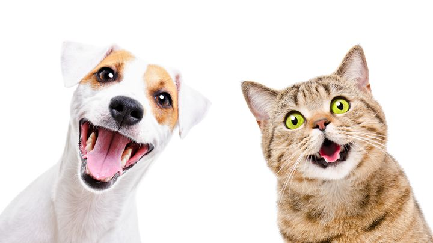

Durante el pasar de los años, las personas van cambiando sus hábitos y adquiriendo unos nuevos que se adaptan a su modo de vida,
el mundo constantemente está experimentando y pasando por avances en diversidad de temas como la economía, el ambiente y por
supuesto la tecnología que durante los últimos tiempos ha trascendido a escalas inimaginables y ha propiciado grandes cambios
en la sociedad, en la actualidad todo se maneja a través de diferentes canales virtuales, se han creado múltiples opciones que
ayudan y facilitan la vida de las personas, por otro lado y siguiendo con el tema de avances, es muy cierto que en la cultura en
la que el mundo se encuentra hoy en día muchas personas han tomado como hábito el cuidado de una mascota, mucha gente ya no piensa
en cultivar una familia o en tener hijos, si no que su proyecto de vida se convierte en generar utilidades y tener como su compañía
a una mascota, de hecho, este concepto ha crecido tanto que el mercado también ha tenido que actuar frente a ello y se ha visto
obligado a generar más oferta de productos para animales de compañía, ahora se puede observar cómo han nacido muchos negocios dirigidos
única y exclusivamente al mantenimiento y bienestar de las mascotas, pero no basta solo con ello, al mismo tiempo que se crean
negocios, se identifica que muchos solamente buscan generar rentabilidad y ofrecen productos que no le hacen bien a los animales.
El sentido primordial que tiene la puesta en marcha de esta aplicación son sus múltiples beneficios y funciones que contribuirán
a muchos negocios de tiendas de alimentos naturales y que también propiciará un desarrollo económico, una de las funciones de la
aplicación es ser un puente de comunicación a través de la App, el segundo pilar de esta aplicación es la comercialización de
alimento natural para perros y gatos con algún tipo de necesidad especial bien sea en su metabolismo o en su piel, pero también va dirigido
a aquellas personas que quieren cambiar el alimento de sus mascotas por algo más sano, ya que como se sabe los concentrados comunes
están llenos de conservantes.